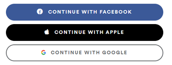
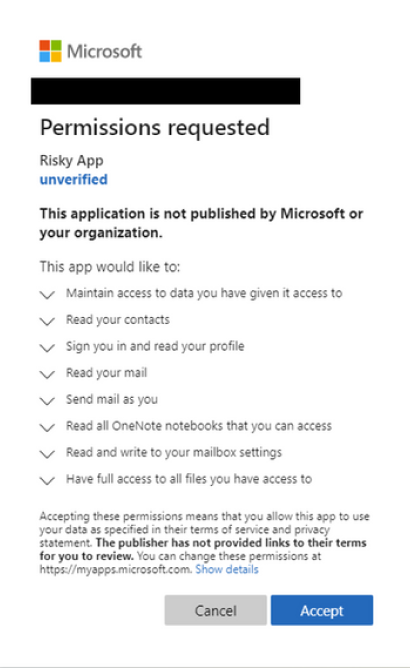
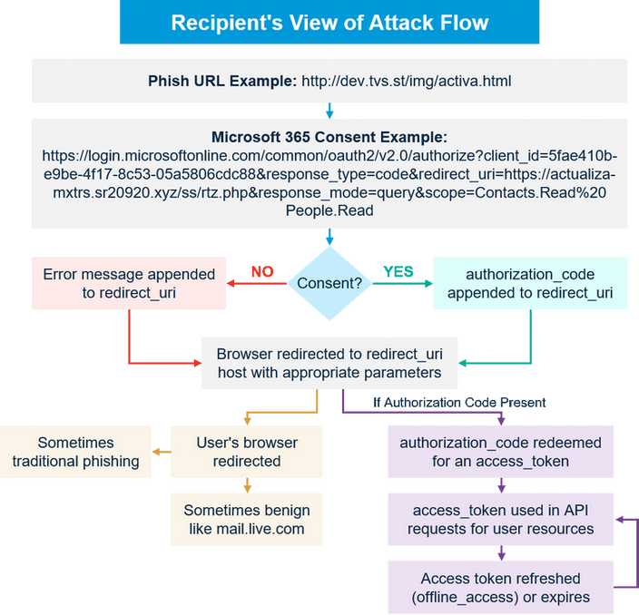

You Implemented OAuth, Are You Protected?
OAuth is a convenient option for organizations as they move away from passwords. The OAuth standard is fairly easy to implement, and because it removes the password, OAuth seems to solve much of the Social Engineering dilemma that is plaguing organizations of all sizes. If it sounds like I am setting up an issue, I am. So, what is the problem? Well, before we dig into the concerns with OAuth, let’s quickly look at exactly what OAuth is.
What is OAuth, a Brief History
At the highest level, OAuth is an open standard for authorization. Specifically, OAuth is generally used to provide secure delegated access and replace the username/ password authentication mechanism with access tokens. OAuth is great for its intended use, as it solves a number of problems inherent to providing Single Sign On (SSO) capabilities between apps, like removing the username and password from the equation. Similar to how file permissions work on folders; OAuth also allows fined grained controls for compartmentalized access to the data a user wishes to share. OAuth may be sounding pretty good about now, and it actually is a great standard. It’s not foolproof.

How OAuth is Vulnerable?
One of the big vulnerabilities inherent in OAuth is that it allows users the ability to grant permissions to elements of their data to third-party applications. In a perfect world, this is a great feature that allows users to have the flexibility to grant granular access to their data. Unfortunately, in the case of consent phishing, they are oftentimes providing access to malicious entities, and in the worst cases, providing swaths of organizational data to these entities as well.
Microsoft details the steps below:

An attacker registers an app with an OAuth 2.0 provider, such as Azure Active Directory
The app is configured in a way that makes it seem trustworthy, like using the name of a popular product used in the same ecosystem
The attacker gets a link in front of users, which may be done through conventional email-based phishing, by compromising a non-malicious website, or other techniques
The user clicks the link and is shown an authentic consent prompt asking them to grant the malicious app permissions to data
If a user clicks accept, they will grant the app permissions to access sensitive data
The app gets an authorization code which it redeems for an access token, and potentially a refresh token
The access token is used to make API calls on behalf of the user.
If the user accepts, the attacker can gain access to their mail, forwarding rules, files, contacts, notes, profile, and other sensitive data and resources.
A specific example of OAuth consent phishing can be seen in TA2552. This named actor has been allegedly perpetrating O365 attacks since August 2019. Customers were targeted with links that took them to legitimate Microsoft third-party apps consent pages. Once signed in, the users continued with the actual O365 consent process granting the malicious application read-only permissions to their data, specifically the user’s contacts and mail. As seen below victims can be retargeted multiple times during the same consent phishing attempt.

Flow from Proofpoint and further details.
Steps to Protected Your Organization
Do not leave it to the user
Security training should be a part of every organization's overall risk mitigation strategy. However, the few hours per year dedicated to the task falls short of the lifelong experience of most attackers. Having said that, even the most experienced security professionals have fallen victim to phishing and website impersonations. Take as much out of the users’ hands as possible. Implement authentication protected by Full Duplex Authentication® (FDA) which makes it infeasible for the user to inadvertently grant access to the malicious applications. For more information on FDA, read our white paper here.
Use “Secure by design” authentication
OAuth’s strengths can also be major weaknesses. OAuth was meant to be flexible, and while it can be adequately secure with the care and nurture of an exceptional development team that focuses on security, it as often can be poorly implemented and left with glaring vulnerabilities. Instead, implement authentication such as NoPass™, which was built from the ground up to be secure.